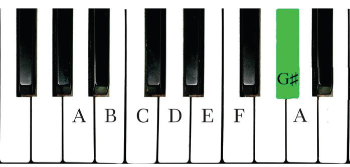
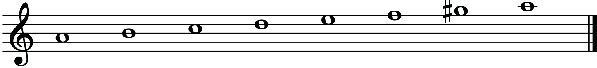
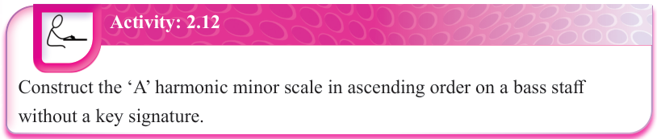
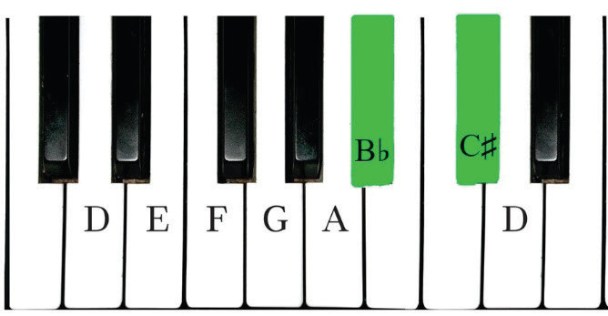

The ‘A’ harmonic minor scale
The ‘A’ harmonic minor scale is constructed by slightly changing the ‘A’ natural minor scale that was constructed in figures 2.36 and 2.37. Figures 2.44 and 2.45 show ‘A’ harmonic minor scale on a piano and staff.



Activity: 2.12
Construct the ‘A’ harmonic minor scale in ascending order on a bass staff without a key signature.
The D harmonic minor scale
The D harmonic minor scale is constructed by slightly changing the D natural minor scale that was constructed previously in figures 2.38, 2.39 and 2.40. Therefore, the seventh note in the D natural minor scale, which is C, is raised a half step to become C♯. Figures 2.46 and 2.47 show the D harmonic minor scale on a piano and staff.
